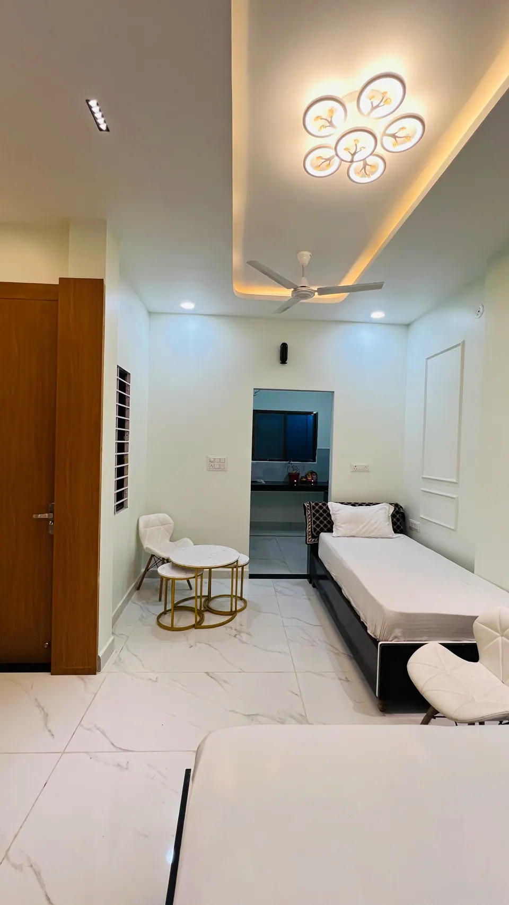

Where to Stay Near Mahakaleshwar Temple: A Family Guide

The best place to stay near Mahakaleshwar Temple is one within about 2 km, with an easy way to reach the gate at 3:30 AM, a kitchen, and a lift or ground-floor access if elders are travelling. Distance matters less than how smoothly the early morning, the long queue and the return to rest go for your family.
We have hosted pilgrim families in Ujjain since 2023, and the same few questions come up every time: how close is close enough, who will take us to the temple before dawn, and where will Dadi rest between darshans? Here is how we think about it, in plain terms, so you can choose well whether you stay with us or not.
How close is "near" Mahakaleshwar?
Ujjain is a compact city, and almost everything a pilgrim needs sits within a few kilometres of the temple. The district's main railway station, Ujjain Junction, is described by one local guide as roughly 1.8 to 2 km from the temple, a ride of 5 to 10 minutes (Ujjain Darshan). So "near" can honestly mean anything from a short walk to a short auto ride.
What changes the experience is not the kilometres but the conditions: a 3:30 AM start in the dark, crowded lanes on Mondays and festival days, and children or elders who tire quickly. A stay that is 2 km away with a reliable shuttle can be far easier than one that is 500 metres away but has stairs and no help.
Walking distance versus a shuttle
Walking is pleasant in daylight, and many fit guests enjoy it. Before dawn, with a queue ahead, most families prefer a vehicle that drops them close to the gate and collects them afterwards. Ask any stay you consider whether the temple run is included, and at what hour it leaves.
The temple area: what to expect around the gate
Visitors now reach the temple through the Mahakal Lok corridor, which the Incredible India tourism site describes as stretching more than 900 m, with 192 statues, 53 murals and 108 sandstone columns, and two gateways, Nandi Dwar and Pinaki Dwar (Incredible India). It is a lovely walk, but it is also a distance to cover on foot, which is worth remembering when you plan with elders.
If you plan to attend the 4 AM Bhasma Aarti, remember that it needs a permit booked in advance. Our step-by-step Bhasma Aarti booking guide explains how, and our darshan timings guide covers the rest of the day.
Four types of stay compared
Dharamshala
Simple, affordable and very close to the temple, dharamshalas suit pilgrims on a tight budget. The trade-offs are usually shared facilities, fixed rules and limited privacy. Availability on festival days can be uncertain, so ask early.
Hotels
A hotel gives you a room, housekeeping and a restaurant. It works well for short, simple trips. For a family of six with elders, you may need several rooms, and meals depend on the restaurant's hours.
Homestay or service apartment
These sit between a hotel and a villa. You often get a kitchenette and a more personal host, though facilities vary widely from one place to another.
Private villa
A villa keeps your family together under one roof with your own kitchen, living room and caretaker. It costs more per room than a dharamshala, but often less per person for a group of six to eight. For a deeper comparison, see our guide on where to stay for Mahakal darshan and our note on staying with a kitchen.
A checklist before you book
- Temple run: Is there a shuttle, and does it leave by 3:30 AM for Bhasma Aarti?
- Elders: Is there a lift, and is the stay wheelchair friendly?
- Food: Is there a kitchen, or a cook you can ask for?
- Check-in and check-out: Early arrivals from night trains are common. Ask what is possible.
- Cancellation: Festival dates are often stricter. Read the terms before you pay.
- Getting there: From the station, e-rickshaws and autos run all day and night; the same guide lists shared fares of about Rs 30 to 50 per seat and Rs 100 to 150 for a full auto to temple-side hotels. For families with luggage and elders, a pre-booked cab is easier (Ujjain Darshan).
For the journey itself, our travel page lists transfers and day trips. For a transfer from Indore airport, indicative prices are Rs 2,500 for a sedan and Rs 3,500 for an SUV one way; WhatsApp us for a confirmed quote.
Plan the first night and the last morning
Many families arrive tired from a night train or a long drive. If you can, keep the first evening light: settle in, have a simple meal, and sleep early if the Bhasma Aarti is next. A stay that lets you cook something warm or ask for a cook makes this far easier than hunting for an open restaurant at 10 PM.
Think about the last morning too. Check-out times vary from one stay to another, and a late train needs a place to leave your bags or a later check-out. Ask about this before you book rather than on the day, and keep prasad and fragile gifts in your hand luggage.
Finally, build in rest. Darshan is not a race, and elders and children enjoy it more when the afternoon is free. Choose a stay where lying down for an hour, with tea at hand, is simple.
Where to stay near Mahakaleshwar for a family trip
All five AP Villas are within 2 km of Mahakaleshwar Jyotirlinga, about 6 minutes by car or 12 minutes on foot, and in-house guests get a complimentary Mahakal shuttle (up to 5 guests per trip).
Rudrangan Suites: our newest villa



Rudrangan Suites opened in 2026 with designer finishes and garden seating. It has three bedrooms and sleeps 6, which suits a family with grandparents, parents and children. There is a lift, it is wheelchair friendly, pets are welcome, and the kitchen has an induction cooktop for early chai. It starts from Rs 5,200 per night. Check-in is at 10:30 AM and check-out at 9:30 AM, with a later check-out possible on request, subject to availability.
For other groups:
- Divinestay: three bedrooms, sleeps 8, private rooftop. From Rs 5,500 per night.
- AP Suite: two bedrooms, sleeps 4, for couples and small families. From Rs 4,200 per night.
On your arrival evening, our caretaker explains the Bhasma Aarti booking process, online or at the counter. The help is complimentary, and the temple permit itself is booked by you. See all our villas, or visit the contact page.
Frequently asked questions
How far should I stay from Mahakaleshwar Temple?
Within about 2 km is comfortable for most families. All five AP Villas are within 2 km, roughly 6 minutes by car or 12 minutes on foot. More important than distance is a shuttle or vehicle for the pre-dawn Bhasma Aarti and easy access for elders.
Is it better to stay near the temple or near the railway station?
The two are close in Ujjain. One local guide puts the station about 1.8 to 2 km from the temple, a 5 to 10 minute ride. Staying nearer the temple saves effort on darshan days, while the station area suits very short stopovers.
Can a stay help with Bhasma Aarti?
At AP Villas, the caretaker explains the booking process, online or at the counter, on arrival evening, and the shuttle drops guests at the temple gate by 3:30 AM for the 4 AM aarti. The help is complimentary; the temple permit is booked by the guest.
Is a villa better than a hotel for a large family?
Often, yes. A villa keeps a group of six to eight together, with a kitchen, living space and a caretaker. Divinestay sleeps 8, and Rudrangan Suites sleeps 6. For one or two travellers on a short visit, a simple hotel can be enough.
Is there a lift for elderly parents?
Yes, a lift is available, and our stays are wheelchair friendly. Please tell us about any mobility needs when you message us, so we can suggest the most comfortable villa for your parents and confirm the arrangements before you arrive.
Sources
- Ujjain Darshan: How to reach Ujjain by train
- Incredible India: Mahakal Lok corridor and its enchanting attractions
Timings, prices and dates change, especially on festival days. Please verify before you travel with the official temple or government site.
Wherever you stay, we hope your first darshan feels calm and unhurried. Tell us your group size and dates, and we will suggest the right villa.
— Apoorv, Founder, AP Villas & Resorts